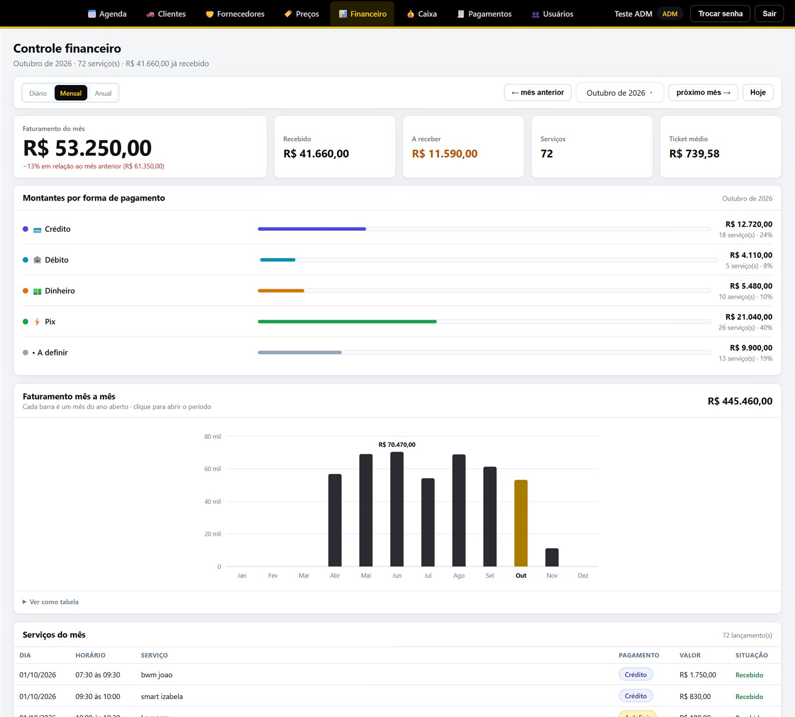
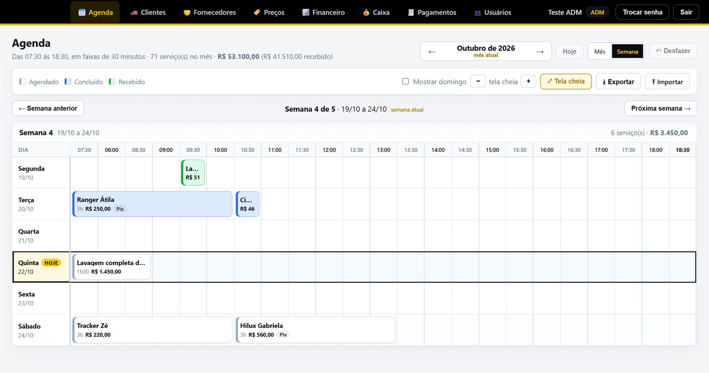
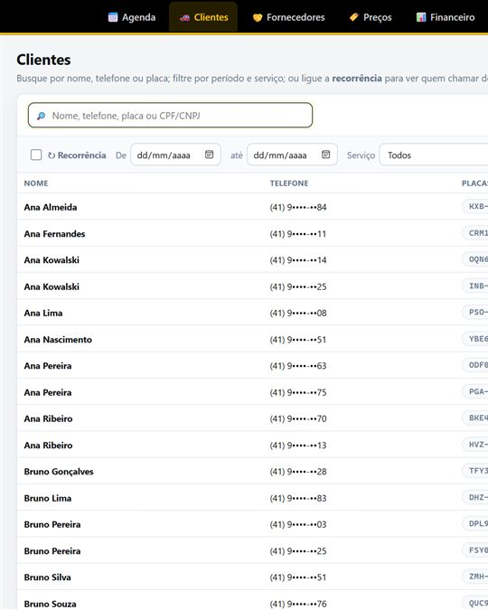
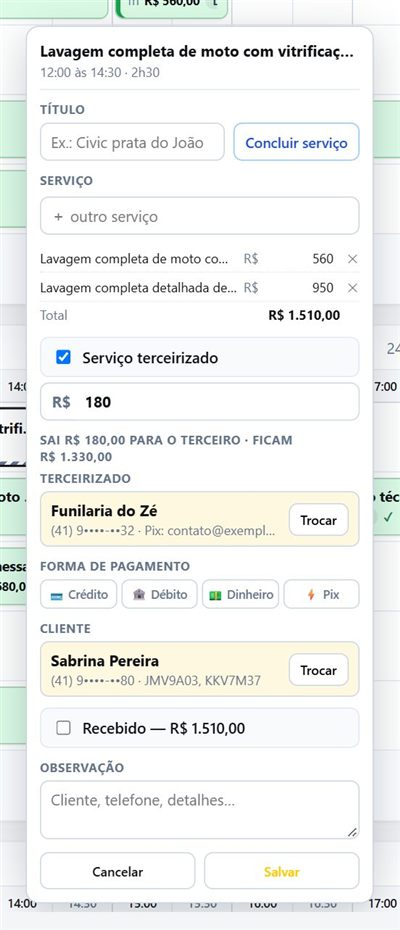
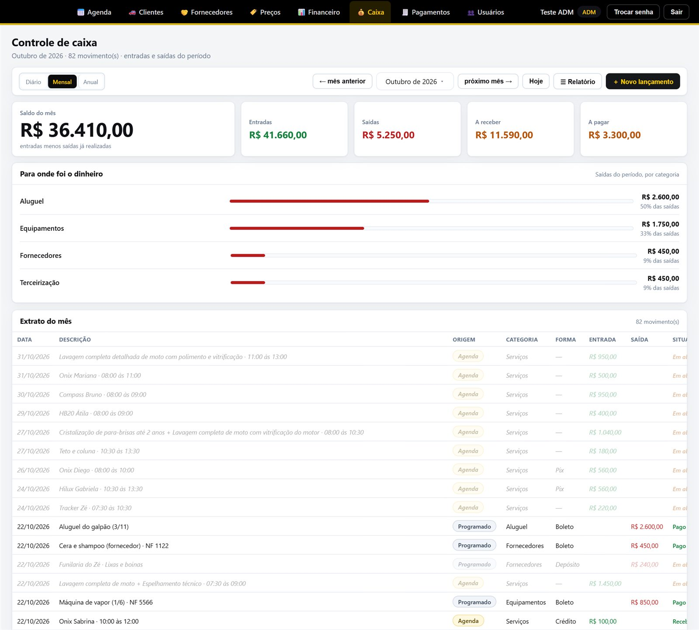
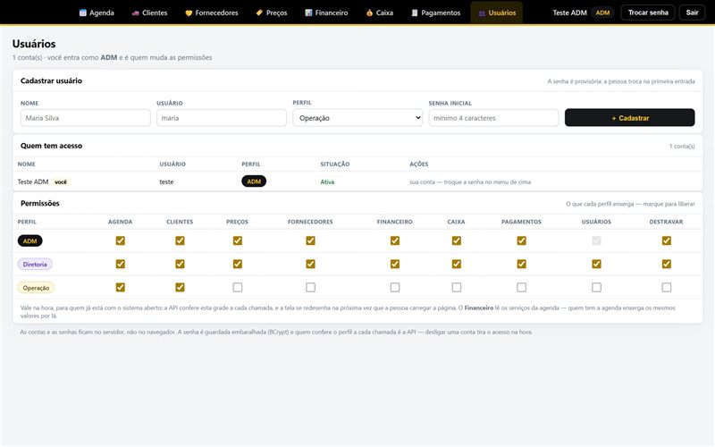
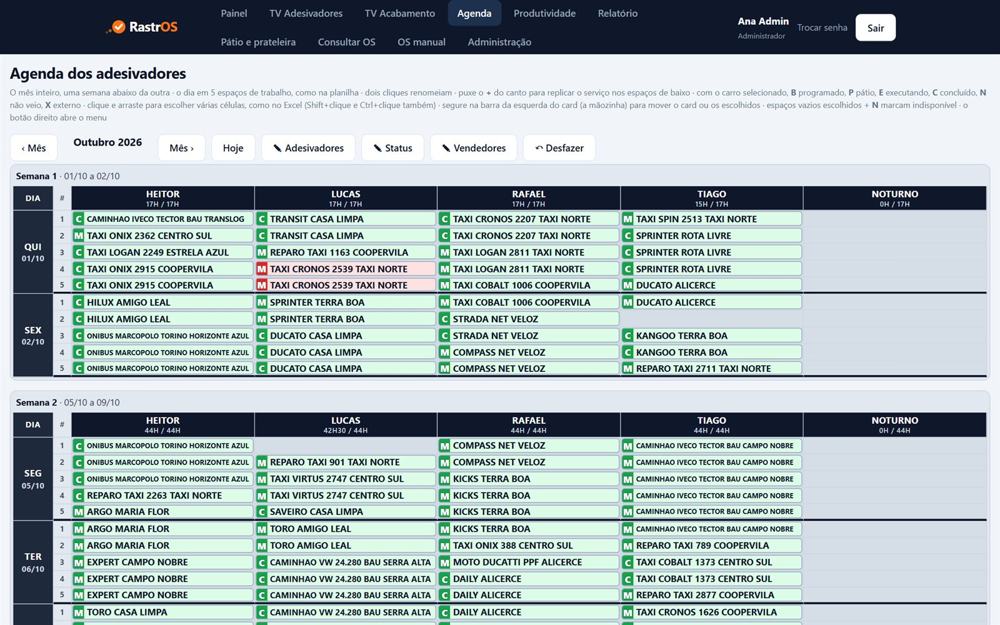
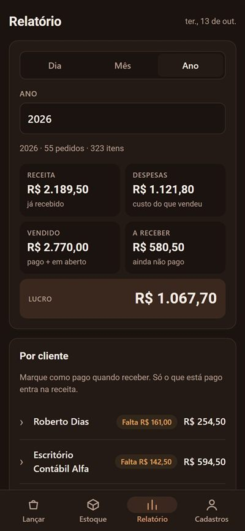
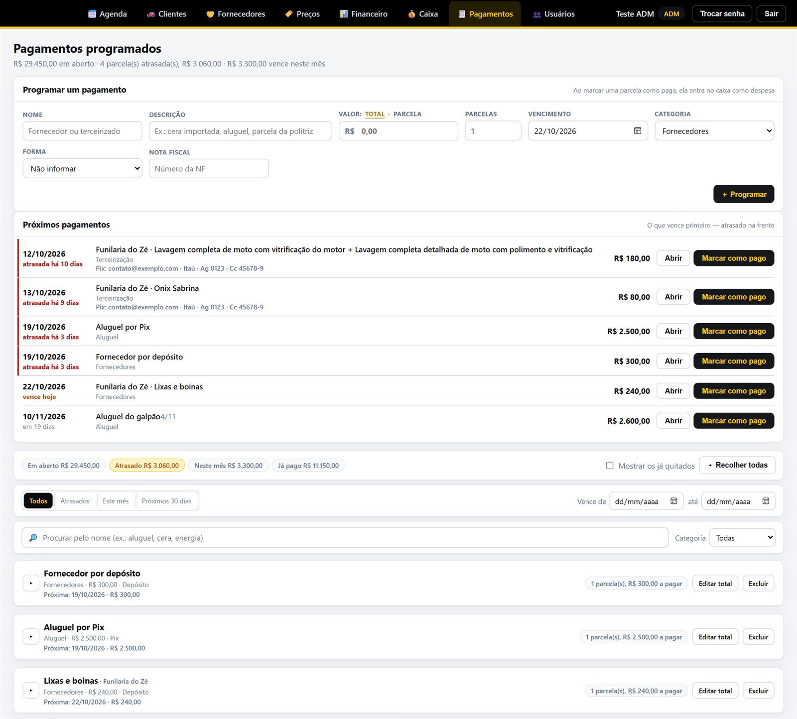

Mapear o processo
Converso com comercial, produção e diretoria e marco onde o pedido para.
3 sistemas implantados, 2 em uso
Levanto o processo com quem vende, produz e decide, escrevo as regras e acompanho o uso diário. O principal roda uma estética automotiva.

A agenda era caderno e planilha, o dinheiro ficava espalhado e o fechamento do mês era feito na mão. Hoje agenda, clientes, terceirizados, contas e caixa conversam no mesmo sistema.




O mesmo caminho nos três projetos, da primeira conversa ao suporte depois da entrega.
Converso com comercial, produção e diretoria e marco onde o pedido para.
Requisitos, regras de negócio e indicadores validados antes da primeira tela.
Perfis de acesso, treino da equipe e suporte no dia a dia, com testes automatizados.

Ninguém sabia em que setor estava cada pedido, e a agenda dos instaladores vivia numa planilha.

App Android que trocou o caderno de papel. Um pedido sai em três toques e baixa o estoque sozinho.

Faço o levantamento e as regras; o código é escrito com o Claude Code e conferido por testes automatizados.
